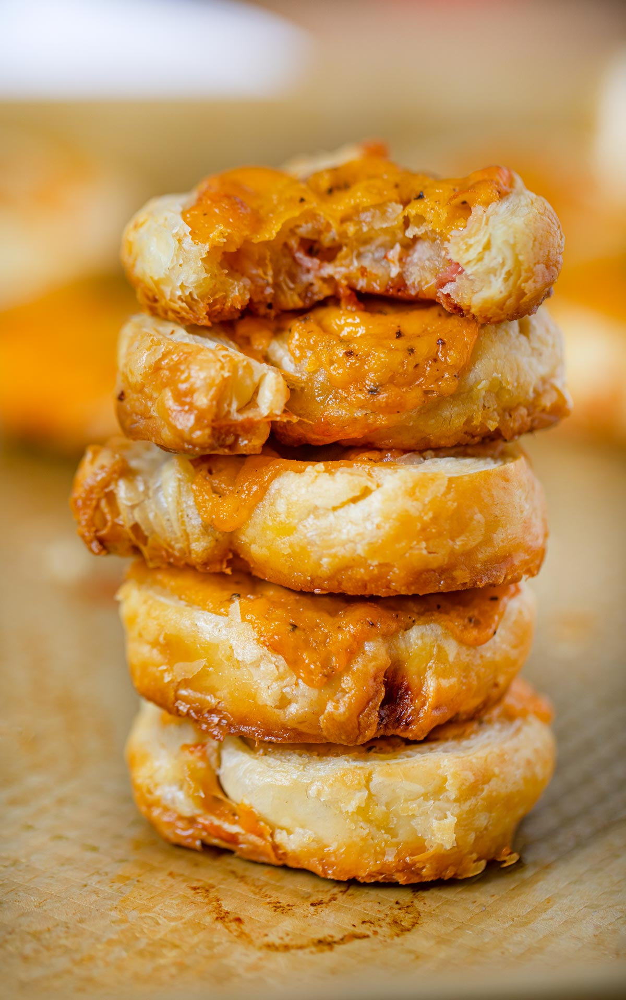

Cheese and Bacon Whirls

Home
Description
This is family-must have treat, especially for birthdays. It's filling, savory and quick to make.
Ingredients
- 1 x 400g ready rooled puff pastry, thawed
- 250g streaky bacon rashers
- 200g grated cheese
Steps
- Unroll pastry on a lightly floured surface.Trim rind off bacon and if the rashers are very thick, flatten them with the blade of a chopping knife
- Arrange bacon rashers in a single layer over pastry. Sprinkle with grated cheese.
- Roll pastry up into it's original shape.
- Chill or freeze until firm.
- Slice into 2cm thick rounds. Lay them flat onto a baking sheet in a pan, leaving about 1cm between the whirls.
- Grill under a low heat until lightly golden. Turn and grill second side.
- Enjoy!